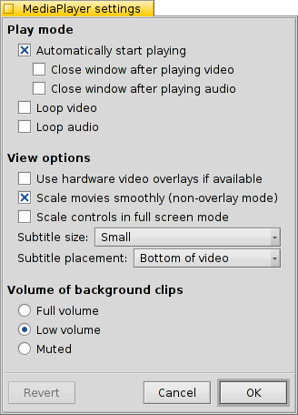

Tocador de Mídia
Tocador de Mídia
| Deskbar: | ||
| Localização: | /boot/system/apps/MediaPlayer | |
| Definições: | ~/config/settings/MediaPlayer |
MediaPlayer is the default player for all audio and video files. Thanks to its ffmpeg backend, a plethora of widely used formats are supported. Its simple interface has all the controls you'd expect:

A botão deslizante da barra de progresso permite rapidamente mover a uma posição, deixar o mouse sobre ele mostra o tempo atual e restante do clipe. Clicando na exibição de tempo à direita dele, alterna entre tempo total, atual e restante.
Abaixo encontram-se os controles usuais para pular para a faixa anterior, tocar/pausar, parar e saltar para a próxima faixa. Então segue o controle de volume (clicando no símbolo do alto-falante alterna para mudo) e um indicador VU.
Reprodução de áudio e vídeo
Uma vez que não existem quaisquer funcionalidades específicas para reprodução de áudio, iremos direto para as funcionalidades de vídeo ou gerais.

Disponível para todas as mídias está a (ALT I). Ela exibe informações sobre o arquivo atualmente carregado, como tempo de exibição ou detalhes da faixa de áudio/vídeo e seu codec.
A maioria dos comandos frequentemente utilizados dos menus estão também disponíveis a partir do menu de contexto, com clique no botão direito do mouse, na área do vídeo. Útil quando em modo de tela cheia.
Em podemos encontrar opções para ampliar a janela em vários níveis ou forçar a taxa de aspecto para alguns valores padrão. Deixando a taxa de aspecto para as padrão, deverá trabalhar melhor para os arquivos corretamente codificados.
O Tocador de Mídia suporta legendas em formato SRT. Para tê-las exibidas sob o menu , seus nomes de arquivos tem que ser idênticos ao de seus arquivos de vídeo, com um nome de idioma sufixado e a extensão ".srt" ao invés da extensão do vídeo. Por exemplo:
MeuFilme.avi MeuFilme.Alemao.srt MeuFilme.Ingles.srt MeuFilme.Frances.srt
Faixas de áudio múltiplas, muito frequentemente utilizadas por vários idiomas dentro de um único arquivo de vídeo, estão disoníveis a partir do submenu . O submernu oferece o mesmo quando existem múltiplas transmissões de vpideo disponíveis.
Pode-se fixar o modo (ALT ENTER ou F ou um clique duplo com o botão esquerdo do mouse), ocultar as bordas da janela e os controles do Tocador de Mídia with (ALT H ou um duplo clique com o botão direito do mouse) ou ter sua janela (ALT A).
Listas de Reprodução
(ALT P) abre uma janela com os arquivos atualmente listados para reprodução. O clique duplo em uma entrada faz com que comece a tocar.

Pode-se adicionar mais arquivos soltando-os dentro da lista e rearranjando sua posição via arrastar e soltar. A patir do menu pode-se ou (DEL) uma entrada da lista ou eliminar o arquivo atual com (ALT T).
Naturalmente, pode-se uma lista de reprodução e mais tarde novamente, ou iniciá-la simplesmente com um duplo clique no arquivo da lista de reprodução.
Definições
Existem muitas definições para o ajuste fino do comportamento do Tocador de Mídia:
The first batch, , is pretty self-explaining.
Start playback automatically, close windows when finished or play clips in a loop.
From the pop-up menu you choose MediaPlayer's launch behavior. Should it resume playing where it left off last time: , , or .
Next are different .
You can opt to , which cuts down CPU usage but only works for one video window and needs a supporting video card driver.
You can (when not in overlay mode) which uses very fast filtering to smooth over otherwise blocky pixels when zooming video or watching in full-screen mode.
if you prefer slightly bigger controls, maybe because you watch the screen from a bit farther away when in full-screen mode.
Then there are settings for and . They can be shown at the , which will always have them overlayed over the picture. Or , which allows you to resize the window vertically and have the subtitles appear in the black bar at the bottom instead.
a última definição determina o volume de áudio dos clipes cujas janelas não estão atualmente ativas. Pode-se tê-las todas tocando em , no menos confuso ou silenciosamente .
Controles de teclado
O Tocador de Mídia oferece convenientes combinações de teclas para controlar a reprodução sem utilizar o mouse.
| Z | Pular para a faixa anterior | |
| X | Tocar | |
| C | Pausar | |
| V | Parar | |
| B | Pular para a próxima faixa |
Estas teclas são atribuídas para as funções de botões de controle. Elas são sempre as teclas de letras na parte inferior esquerda do teclado, ou seja, são utilizadas independentemente do seu atual mapeamento de teclado. As teclas acima correspondem ao mapa de teclado US americano padrão.
| ← / → | Seek backwards/forwards | |
| SHIFT ← / → | Jump backwards/forwards 10 seconds | |
| ALT ← / → | Jump backwards/forwards 30 seconds | |
| ↓ / ↑ | Decrease/Increase volume | |
| ALT ↓ / ↑ | Skip to next/previous Track | |
| Spacebar | Alternar tocar/pausar | |
| ALT ENTER | Toggle full-screen mode (also done by double left-clicking the video area or pressing F or TAB) | |
| ALT SHIFT 0 / 1 / 2 / 3 | Changes aspect ratio to (how the video was encoded), (maps the pixels of the video 1:1 to the screen), , |